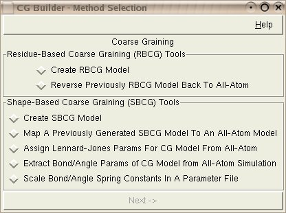
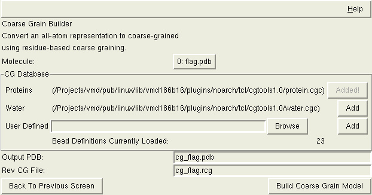
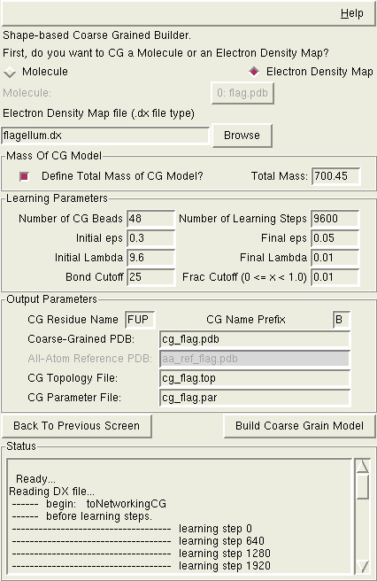
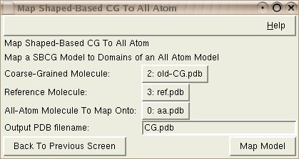
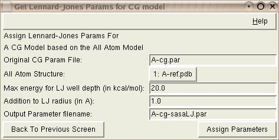
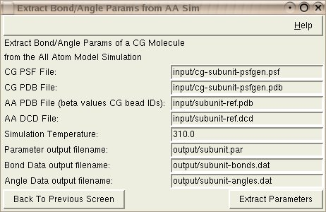
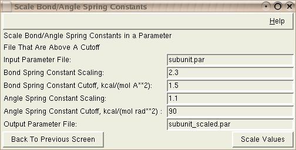

CG Builder provides a simple set of tools for transforming structures between coarse grained and all-atom representations.
CG Builder supports two methods of creating a coarse grained model:

The graphical interface is available under Extensions | Modeling | CG
Builder from within VMD. First, you choose what you want to do: convert
an all atom model to a coarse-grained one (and the particular method to use), or
you can convert a previously converted coarse-grained model back to
all-atom.
First, you will need to convert an all-atom representation to a coarse grained representation.
The sample coarse-graining scheme provided for the RBCG method in the CG Builder follows that reported in the two publications above, and, for lipids, water, and ions, that of the Marrink's CG model (Marrink et al., J. Phys. Chem. B, 108:750-760 (2004); and Marrink et al., J. Phys. Chem. B, 111:7812-7824 (2007)). This scheme employs a correspondence of about 10 atoms per CG bead. For example, a DOPC lipid is represented by 14 CG beads: one for the choline group, one for the phosphate group, two for each of the glycerol groups, and ten to represent the two hydrocarbon tails. Four water molecules are represented by a single CG bead; an ion together with its first hydration shell (six water molecules) is represented by one CG bead. Each amino acid is represented by two CG beads, one for the backbone and one for the side-chain (glycine is represented by a single backbone CG bead).
However, when using the residue-based coarse-graining in the CG Builder, one does not have to follow the sample CG scheme. As explained below, one can create arbitrary definitions of which atoms correspond to which CG bead, and use those to create their own RBCG models with the CG Builder.
 You must define the relationship between the desired CG beads and the atoms in your all atom representation. Sample relationships (database files) are given for proteins and for water. If you want to use these, you can just click the 'Add' button next to the file and it will be used for the CG mapping.
You can also create your own bead database definitions. Instructions are given below. Once you have a file(s) with these custom bead definitions, you can load them into the interface. Browse to the bead definition file and then select 'Add' next to the Browse button. VMD will load the bead definitions and the number of 'Bead Definitions Currently Loaded' should increase by the expected amount.
The Residue-based CG Builder produces two output files. The first is the revised PDB file reflecting the coarse grained beads instead of all-atom. A sample filename is given based on the molecule name loaded, but you can change it as desired.
To be able to properly return to an all-atom representation, CG Builder will needs a work file that is a 'Reverse Coarse Graining File'. Again, a sample filename is given. The important thing is that this file isn't lost, because it will be needed when you want to convert the coarse-grained system back to the all-atom representation.
Once the Residue-Based CG PDB file is produced, one can prepare the
Residue-Based CG system for a simulation in essentially the same way as it is
done for all-atom systems. VMD provides a sample RBCG topology file,
rbcg-2007.top, in the cgtools directory in your plugin path which
can be used with psfgen or AutoPSF to
create the complete PDB and PSF pair for a simulation. The simulation can be
performed using the RBCG parameter file provided with VMD,
rbcg-2007.par (also in the cgtools directory in your plugin path).
For the details on the simulation settings, please see the following
publications that employed the Residue-Based CG model:
After running the simulations, you will likely have coarse grained molecules that you need to convert back to all-atom. The CG Builder plugin currently supports reverse coarse graining for Residue-based coarse graining. This implementation of the reverse coarse-graining has been first reported in:
A simulated annealing run from NAMD will usually need to be run after reconstruction of the all-atom model. The annealing run needs to be run in a specific way, so the CG builder tool can create the proper NAMD configuration files to use. By default the CHARMM parameter file (used by several other VMD plugins) will be used for the config file, but you can alter this as desired. In addition, the PSF filename will be needed for the NAMD simulation.
Shape-based coarse graining uses a neural network algorithm to learn the best location in which to place the CG beads. The placement is then adjusted (usually slightly) based on the centers of mass of the atomic clusters comprising each bead. A technical description of what the shape-based CG algorithm does is available at the TCBG's Shape-based CG web page.
 Shape-based coarse graining can act upon either a molecule loaded in PDB/PSF form, or an electron density map. Choosing the proper option will slightly modify which elements of the form need to be given.
Starting From A Molecule - If you have a molecule, the CG Builder requires you to have the appropriate all-atom molecule loaded into VMD. You can then choose the correct VMD molecule from the dropdown list. If you don't have the molecule loaded, you can load it in VMD and then choose it from this dropdown. In addition, you will want to load in an appropriate PSF file for the molecule, as certain values from the PSF file are used for the placement and assignment of properties for the CG beads. Specifically, the PSF file contains information about the mass and charge of every atom. If the PSF file is not provided, VMD will guess masses of the atoms (usually, VMD's guess is quite good), but all charges will be assumed to be 0.0. In this case, the CG model will reflect the mass distribution well, but it will not contain any information about the charge distribution.
Starting From An Electron Density Map - If using an electron density map, you will need to choose the location on your disk of a SITUS or .DX file that contains the map.
Mass of the CG model - If you choose to do so, you can specify the desired total mass of the resulting CG model (which will get put into the topology file). When starting with a molecule, this typically won't be necessary. The molecule will contain enough information about the atoms that the mass can be properly determined. If, for whatever reason, you want to scale the masses of the CG beads you might want to specify the final mass, though.
When starting with an electron density map, being able to specify the total mass of the CG model is much more useful, though. After calculating the location of each CG bead and how much of the density maps that is being represented by each bead, the algorithm will take the total mass value that you have provided and scale each CG bead accordingly.
Number of Beads - Choose the number of beads that you want to create from the original molecule. If you choose a number that is too large, you stand a good chance of having some beads created which don't have any actual real atoms associated with them. If this happens, rerun the model creation with fewer beads. The plugin will default to number of atoms divided by 500 if using a molecule as input. If using an electron density map you will need to provide a reasonable value (the default number of beads will be the number of density points divided by 550).
Number of Learning Steps - By default, this is 200 times the number of desired beads. You can set it to anything that you wish, though.
"Lambda" and "eps" are parameters used by the learning algorithm. The default values for Initial/Final eps and Initial/Final Lambda in the plugin are a reasonable choice that will work in most cases. You can change these values if needed. By default, the initial value for lambda will be 0.2 times the number of desired beads. Other default values are independent of the number of beads.
Bond Cutoff - Cut-off distance for establishing bonds between beads (in angstroms).
Frac Cutoff - This parameter (only used when working with density maps) should be a number between zero and one. Regions of the map with density values below this number (times the maximum density value in the current map) will be neglected.
CG Residue Name - Three characters or fewer. This residue name will be printed in the output files.
CG Name Prefix - For naming the CG atoms and types. This should be a single character. If 'A' is used, atom names will be A1, A2, etc.
Output Files - The Coarse-Grained PDB file, the topology file, and the parameter file will contain information about the beads, their locations, connections, charges, etc. The All-Atom Reference PDB (which only applies if you are starting from a molecule and not an electron density map) will be the same as the original molecule, but the beta field for each atom will contain the index number of the bead to which the atom was assigned.
After building the coarse grain model, one would normally run psfgen
(can be conveniently done by using AutoPSF plugin of VMD:
Extensions | Modeling | Automatic PSF builder)
on the coarse grained structure (using a coarse grain topology file) and
then be ready to begin simulations.
 When one works with multiple copies of the same molecule, e.g., protein units in a virus capsid, it is often desirable to construct a CG model for a single copy, and then use exactly the same model for all other copies. For each copy, the CG model should be translated and rotated to match the position and orientation of the copy. This can be achieved using the ``Map Shape-Based CG to All-Atom'' interface. In addition to translation and rotation, the interface can also distort the CG model, if the all-atom molecule copy is in a different conformation than the originally coarse-grained all-atom molecule. Each CG bead in a coarse grained molecule has a respective domain in an all-atom reference molecule. Atoms from each domain of the reference molecule can correspond to atoms of an all-atom molecule that we want to map onto (for two atoms to be declared identical, segname, resid, and name should match). A bead that represents the center of mass of a given all-atom reference molecule domain should be moved to the center of mass of the corresponding domain in the molecule we wish to map onto.
The script takes three molecules loaded in VMD as input.
Coarse-Grained Molecule: CG model of the reference molecule.
Reference Molecule: An all-atom reference PDB for the CG model. (Best to have a PSF file loaded into this molecule so that atom masses are correctly taken into account)
All-Atom Molecule To Map Onto: The copy of the reference all atom molecule, which you want to map the CG molecule onto.
Note: The all-atom molecule to map onto does not have to be exactly the same as the reference all-atom molecule. For example, it may miss some atoms that are present in the reference molecule, such as hydrogen atoms in a model of a protein. The mapping plugin still should be able to do a good job of mapping the CG model onto the all-atom molecule, unless there are too many atoms missing, or the conformation is too distant from the reference molecule.
To enable the flexibility described above, each bead is placed into the center of mass of the corresponding all-atom domain, rather than aligning the whole CG structure with the all-atom structure.
Output PDB Filename: Desired filename for newly mapped CG molecule.
 When one creates an SBCG model using the shape-based coarse-graining tool of the CG Builder, a CHARMM-style parameter file is prepared that reflects the topology of the SBCG model. However, parameters in this file are assigned very simplistically, using only structural considerations (such as the size of an all-atom domain represented by each CG bead). These parameters can be further refined to introduce more realism and specificity into the model, as described in the following for the case of non-bonded interations.
This tool extracts solvent accessible surface area (SASA) for each atomic domain representing a CG bead from an all-atom structure corresponding to the CG structure. The values extracted are SASA for the whole domain (in the context of the rest of the structure) and SASA for hydrophobic residues only. These values are used to assign the LJ well depths Ei to individual CG beads, as Ei = ELJ * (SASAi[hydrophobic]/SASAi[total])2, where ELJ is an adjustable constant. Radius of gyration is used to compute LJ radii; LJ radius Ri is obtained as Ri = r_gyri + RLJ, where r_gyri is the radius of gyration for all atoms represented by the ith CG bead and RLJ is an adjustable constant.
Input: The Original CG Param File is the parameter file that is created when creating a shape-based CG model.
Input: The all-atom reference structure should be loaded in VMD already; this structure should have beta values filled with numbers corresponding to the CG beads' numbers; since radius of gyration is computed, it is better to load the PSF file into the structure too, so that correct masses are used.
Input: The maximum energy value for the Lennard-Jones well depth, (ELJ) in kcal/mol.
Input: an addition to the Lennard-Jones radius (RLJ) in Angstroms.
Output: The Output Parameter Filename will store the newly assigned Lennard-Jones parameters.
 Better bond and angle parameters of a CG molecule can be obtained by doing a brief (the longer the better, though) all-atom simulation and analyzing the results. These results can then be used to improve the CG model.
Input: The CG PSF File is the PSF file from the CG model. This might have been created with psfgen.
Input: The CG PDB File is the PDB file from the CG model. This might be a byproduct of psfgen.
Input: The AA PDB File is the all-atom PDB file. This pdf file needs to have beta values that indicate the CG bead IDs of each atom. This information will be an automatic result of using the 'Create SBCG Model' option of this tool.
Input: The AA DCD File is the trajectory from the short all-atom simulation.
Input: The Simulation Temperature is the temperature that was specified in the NAMD configuration file for the short all-atom simulation.
Output: The Parameter output filename will store the new CG parameters.
Output: The Bond Data output filename doesn't contain additional information above what the output parameter file contains. It just doesn't have all of the extra comments that a parameter file typically has. If you do multiple short all-atom trajectories you can run this option on each trajectory. The bond/angle files can be used to compare the calculated parameters across these trajectories. (xmgrace works well on these files)
Output: The Angle Data output filename doesn't contain additional information above what the output parameter file contains. It just doesn't have all of the extra comments that a parameter file typically has. If you do multiple short all-atom trajectories you can run this option on each trajectory. The bond/angle files can be used to compare the calculated parameters across these trajectories. (xmgrace works well on these files)
 Sometimes you might find that you need to scale the spring constants of bonds and/or angles that you have in a parameter file. This module can easily do this for you.
Input: The Input Parameter File is the parameter file that needs to have the constants scaled.
Input: The Bond/Angle Spring Constant Scaling is the multiplier that you want applied to the bond/angle spring constants in the file. If you have a value of 1 here, the constants will not be modified. If you have a value of 2, the constants will be doubled (see cutoff, below).
Input: The Bond/Angle Spring Constant Cutoff is a minimum value for bond/angle constants that you wish to scale. If you have a value of 1.5 here, constants with a value below 1.5 won't be modified. Constants above will be multiplied by the scaling factor given above.
Output: The Output Parameter File is the name of the parameter file that will be created with the modified spring constant values.
To access the plugin via the text interface, the relevant commands for coarse graining a system are:
The current bead definition database format (which is subject to change) is a single file with a set of one or more bead blocks, each of which starts with a CGBEGIN statement and ends with a CGEND statement. Any lines outside of a CGBEGIN ... CGEND block will be ignored, as will blank lines or lines starting with a # character. Each line within a bead block contains three whitespace delimited pieces of information: A residue name, atom name, and resid offset (relative to that of the key atom). The first line in the block contains the information that will be applied to the newly created CG bead, the second line of the block is the "key" atom, which will be used to identify clusters of atoms that should be turned into a bead, and all subsequent lines are component atoms of the bead. Note that one bead will be created for each key atom found (unless it has been previously incorporated into another bead), but that missing component atoms will be ignored. The following block is an example CG block for coarse graining of TIP3 water; application of this block would map every cluster of four consecutively numbered TIP3 water residues onto a single CG bead with resname TIP3 and name H2O.
CGBEGIN TIP3 H2O 0 TIP3 OH2 0 TIP3 H1 0 TIP3 H2 0 TIP3 OH2 1 TIP3 H1 1 TIP3 H2 1 TIP3 OH2 2 TIP3 H1 2 TIP3 H2 2 TIP3 OH2 3 TIP3 H1 3 TIP3 H2 3 CGEND